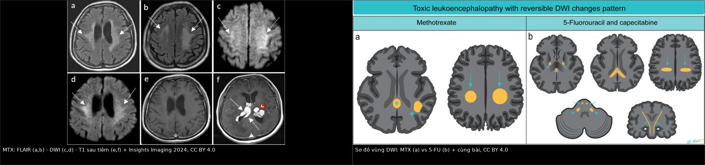
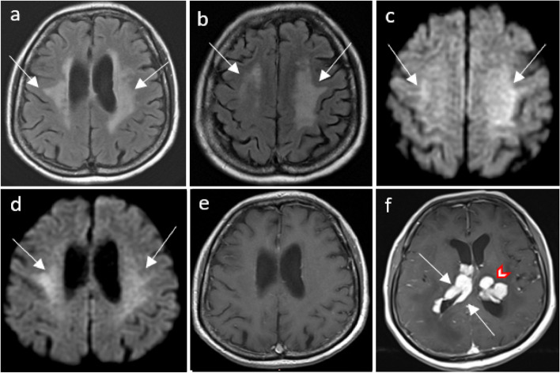
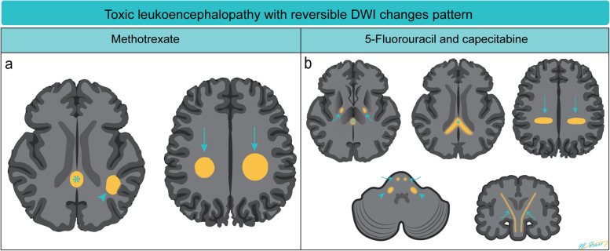

1421 — Theo dõi nhận thức và phục hồi chức năng sau độc tính thần kinh do methotrexate / Cognitive surveillance and rehabilitation after methotrexate neurotoxicity
Tags: pattern:suy-giam-nhan-thuc pattern:ton-thuong-chat-trang pattern:han-che-khuech-tan vung:chat-trang vung:nao-that score:CTCAE score:z-score protocol:MRI-DWI protocol:test-nhan-thuc incidentaloma:khong
Mức chắc chắn (certainty): tổng hợp y văn (literature synthesis) — 1 đoàn hệ 126 bệnh nhân u lympho hệ thần kinh trung ương có hình ảnh học và nhận thức (Ann Hematol 2025, PMC11971226, CC BY 4.0), 1 thử nghiệm pha 3 có bộ test nhận thức IPCG (Neuro Oncol 2024, PMC10995504, CC BY 4.0), 1 nghiên cứu 48 trẻ ALL với BRIEF-2/WISC (Cancer Manag Res 2026, PMC13589970, CC BY-NC 4.0 — chỉ trích số liệu), 1 nghiên cứu nhận thức xã hội ở PCNSL (Cancers 2021, PMC7956780, CC BY 4.0), hướng dẫn EHA–ESMO 2024 (PMC11148853, CC BY 4.0), 1 tổng quan về biến chứng muộn (Nat Rev Clin Oncol 2023, PMC10211308, PMC Open Access Subset — chỉ trích số liệu), 1 nghiên cứu chuẩn hóa MoCA (Brain Behav 2026, PMC13159545, CC BY 4.0) và 1 tổng quan hình ảnh (Insights Imaging 2024, PMC10792151, CC BY 4.0).
Bài này trả lời 4 câu hỏi khi bệnh nhân đã điều trị u lympho nội nhãn/PCNSL xong và gia đình than "người khác đi": (1) Đo nhận thức bằng gì — MoCA đủ chưa, và ngưỡng nào là bất thường? (2) MRI tồn tại tổn thương chất trắng nhưng bệnh nhân không than phiền — có phải bỏ qua? (3) Suy giảm này là di chứng methotrexate, tái phát u, hay trầm cảm–mệt mỏi? (4) Có can thiệp nào cải thiện, và theo dõi bao lâu? Nối 494 – Độc thần kinh methotrexate (hình ảnh) — bài đó dạy đọc MRI; bài này dạy đo và phục hồi chức năng. Nối tiếp 491 – PVRL: theo dõi & tái phát, 462 – U lympho nội nhãn, 493 – U lympho hắc mạc.
1. Tổng quan — vì sao "hình ảnh còn, triệu chứng mất" và ngược lại
1.1 Cơ chế: tổn thương myelin–sợi trục làm hỏng tốc độ, không chỉ nội dung
- Mô bệnh: hủy myelin (demyelination), myelin nhạt màu/không bào, axonal spheroids, xâm nhập đại thực bào, hoại tử (Ann Med Surg 2025, PMC11981439). Đây là tổn thương chất trắng sâu, không phải ổ nhồi máu.
- Vì sao suy giảm biểu hiện sớm ở tốc độ xử lý (processing speed) và điều hành (executive): các sợi liên kết dài giữa vùng trán–đỉnh chạy qua trung tâm bán bầu dục/vành tia; myelin bị tổn thương làm giảm tốc độ dẫn truyền dù từng vùng vỏ não còn nguyên. Đó là lý do bệnh nhân vẫn nói đúng từ, nhớ đúng việc nhưng chậm, dễ mệt, khó lập kế hoạch — và vì sao MMSE 30/30 không loại trừ.
- Vì sao hình ảnh tồn tại lâu hơn triệu chứng: trong loạt 126 bệnh nhân, 33/33 ca có hình ảnh tồn tại ở lần MRI cuối, nhưng chỉ 8/33 có suy giảm nhận thức đáng kể trên lâm sàng, phần lớn không than phiền (PMC11971226, dẫn qua bài 494). Hình ảnh phản ánh mức phơi nhiễm/ tổn thương, không phản ánh khả năng bù trừ của não.
- Vì sao WBRT là biến số nhiễu: xạ toàn não làm nặng thêm tổn thương chất trắng và mạch máu nhỏ; trong HOVON 105, bệnh nhân ≤ 60 tuổi được củng cố bằng WBRT giảm liều, và tốc độ vận động (motor speed) xấu đi từ 24 đến 60 tháng trong khi các miền khác ổn định (PMC10995504).
- TẠI SAO phải đo bằng bộ test, không chỉ hỏi: 8/33 ca suy giảm đáng kể nhưng phần lớn không than phiền; ở trẻ ALL, 47,9% (23/48) có triệu chứng thần kinh nhưng suy giảm điều hành vẫn hiện diện ở nhóm không triệu chứng qua BRIEF-2 (PMC13589970). Bệnh nhân không tự báo vì mất khả năng nhận ra chính mình chậm — đây là "anosognosia nhẹ" của tổn thương trán.
1.2 Ngưỡng định lượng nằm lòng
| Chỉ số | Con số | Nguồn |
|---|---|---|
| Tần suất leukoencephalopathy do điều trị (tLE) | 33/126 (26,2%); tích lũy 29,2% sau 2 năm; trung vị khởi phát 3,0 tháng | Ann Hematol 2025 (PMC11971226) |
| Yếu tố nguy cơ độc lập của tLE | MTX nội tủy (IT MTX) HR 4,50 (1,84–10,99) | cùng nguồn |
| Suy giảm nhận thức đáng kể trong nhóm tLE | 8/33 — phần lớn không than phiền | cùng nguồn (dẫn qua bài 494) |
| Ảnh hưởng lên sống còn | EFS HR 1,07 (0,50–2,27) — không khác biệt | cùng nguồn |
| Bộ test nhận thức chuẩn | IPCG test battery (trí nhớ, chú ý/điều hành, tốc độ xử lý, tốc độ vận động) | EHA–ESMO 2024 (PMC11148853); Neuro Oncol 2024 (PMC10995504) |
| Ngưỡng thay đổi có ý nghĩa lâm sàng | thay đổi z-score > 1 so với nền | Neuro Oncol 2024 (PMC10995504) |
| Lịch đo nhận thức trong thử nghiệm | trước điều trị, sau hóa trị tấn công/củng cố, 3, 6, 12, 24 tháng | cùng nguồn |
| Tuân thủ test dài hạn | ≥ 60% ở mọi mốc, riêng 36 tháng 55% | cùng nguồn |
| Xu hướng nhận thức 5 năm | Cải thiện sau điều trị rồi ổn định đến 60 tháng, trừ tốc độ vận động giảm 24→60 tháng | cùng nguồn |
| Trẻ ALL sau hóa trị | 47,9% có triệu chứng thần kinh; 73,9% cải thiện nhanh; 83,3% giảm tổn thương MRI trong 12 tháng | Cancer Manag Res 2026 (PMC13589970) |
| Suy giảm điều hành ở trẻ (BRIEF-2) | Tăng điểm tự giám sát, kiểm soát cảm xúc, trí nhớ làm việc, lập kế hoạch (p < 0,05) | cùng nguồn |
| Suy giảm IQ ở trẻ (WISC) | Giảm IQ tổng, lý luận tri giác, trí nhớ làm việc, tốc độ xử lý (p < 0,05) | cùng nguồn |
| Nhận thức xã hội ở PCNSL lui bệnh | 43 bệnh nhân CR ≥ 1 năm vs 43 chứng: suy giảm đồng cảm và giải quyết vấn đề xã hội | Cancers 2021 (PMC7956780) |
| MoCA — ngưỡng gốc | < 26/30 là ngưỡng gốc cho MCI, nhưng tỷ lệ dương tính giả cao; ngưỡng MCI điều chỉnh 23 | Brain Behav 2026 (PMC13159545) |
- Đọc con số cho đúng: tLE không làm giảm sống còn (EFS HR 1,07) → không được ngừng/thay phác đồ chỉ vì hình ảnh; nhưng phải đo nhận thức vì 8/33 ca có suy giảm thật. Đây là nguyên tắc "điều trị ung thư theo khối u, phục hồi theo chức năng".
- Vì sao z-score, không phải "có/không": một người có IQ 130 tụt còn 105 vẫn "trong giới hạn bình thường" nhưng mất 1,7 SD so với chính họ. Ngưỡng z ≤ −1,5 dùng để gọi suy giảm, còn giảm > 1 z dùng để gọi thay đổi có ý nghĩa — hai câu hỏi khác nhau.
2. Mẫu hình theo miền nhận thức — gamut nguyên nhân
- Tốc độ xử lý + điều hành (processing speed/executive): tLE, WBRT, bệnh mạch nhỏ, thiếu ngủ, mệt mỏi, thuốc chống động kinh. Đây là miền nhạy nhất với tổn thương chất trắng.
- Trí nhớ làm việc (working memory): tổn thương trán–đỉnh, corticosteroid, mất ngủ, trầm cảm.
- Trí nhớ dài hạn (episodic memory): tổn thương hệ viền/hồi hải mã (u, WBRT), trầm cảm, thiếu ngủ, thiếu B12/thyroid.
- Chú ý duy trì (attention): mệt mỏi do xạ/hóa trị, thiếu máu, suy giáp, thuốc an thần.
- Nhận thức xã hội (social cognition): tổn thương mạng trán–thái dương; 43/43 bệnh nhân PCNSL có suy giảm dù lui bệnh hoàn toàn (PMC7956780) — không bắt được bằng MMSE/MoCA.
- Ngôn ngữ/thị giác không gian (language/visuospatial): cờ đỏ tái phát u hoặc đột quỵ, nhất là khi khu trú và tiến triển ngày.
- Mnemonic "SPEED–MOOD–MED–SLEEP": SPEED (tốc độ xử lý — chất trắng) · MOOD (trầm cảm) · MED (corticoid, chống động kinh) · SLEEP (ngưng thở khi ngủ) — 4 nhóm dễ quy sai cho "tuổi".
3. Bảng so sánh phân biệt — nguyên nhân suy giảm nhận thức sau điều trị
| Thực thể | Hình ảnh điển hình | Chốt vào (rule-in) | Chốt loại (rule-out) | Gợi ý xác nhận |
|---|---|---|---|---|
| tLE do MTX | T2/FLAIR tăng đối xứng ở trung tâm bán bầu dục/vành tia, DWI sáng/ADC tối, KHÔNG ngấm, không hiệu ứng khối; tồn tại sau điều trị | DWI sáng + không ngấm + đối xứng + sau HD-MTX/IT-MTX | Có ngấm hoặc hiệu ứng khối → không phải tLE đơn thuần | MRI DWI/ADC + so phim trước điều trị; test nhận thức nền |
| Tái phát u lympho | Khối ngấm đồng nhất, hạn chế khuếch tán kèm ngấm, quanh não thất; lớn dần | Tổn thương ngấm mới/to ra + DWI sáng có ngấm | Tổn thương không ngấm, đối xứng, ổn định → nghĩ tLE | MRI tăng ngấm + PET/CT; sinh thiết nếu chưa rõ |
| Hoại tử phóng xạ/leukoencephalopathy do xạ | Tăng T2/FLAIR lan rộng, teo vỏ, ngấm dạng "swiss cheese" muộn; thời gian 6–18 tháng sau xạ | Tiền sử WBRT + tổn thương trong vùng xạ + teo | Không tiền sử xạ, tổn thương ngoài vùng chiếu | MRI phổ/ASL; hội chẩn xạ–thần kinh |
| Trầm cảm/mệt mỏi (pseudodementia) | MRI không tương xứng với mức suy giảm; không tổn thương mới | PHQ-9 cao + mệt mỏi + test cải thiện khi điều trị | Tổn thương mới/ngấm → loại trừ tái phát trước | PHQ-9, thang mệt mỏi, hỏi giấc ngủ |
| Corticosteroid kéo dài | Teo hồi hải mã (khó thấy trên MRI thường), không tổn thương đặc hiệu | Dùng prednisone liều cao kéo dài + cải thiện khi giảm liều | Không dùng corticoid → loại trừ | Rà đơn thuốc, đường huyết, giấc ngủ |
| Suy giáp/thiếu B12 | Không đặc hiệu; có thể teo não lan tỏa | TSH cao, B12 thấp, thiếu máu | TSH/B12 bình thường → loại trừ | Xét nghiệm máu |
| Ngưng thở khi ngủ (OSA) | Không đặc hiệu; có thể tăng tín hiệu chất trắng | AHI ≥ 5 + ngáy/ngừng thở + buồn ngủ ngày | Không ngáy, không buồn ngủ → ít nghĩ | Đa ký giấc ngủ |
| Thuốc chống động kinh/benzodiazepine | Không tổn thương | Bắt đầu thuốc gần đây + chậm/sa sút | Không dùng thuốc → loại trừ | Rà đơn, cân nhắc đổi |

Trái: (a, b) FLAIR tăng tín hiệu đối xứng trung tâm bán bầu dục/vành tia, chừa U-fiber dưới vỏ; (c, d) DWI sáng tương ứng; (e, f) T1 sau tiêm: vùng FLAIR/DWI không ngấm, trong khi ổ quanh não thất và đồi thị trái ngấm — tổn thương u còn lại. Phải: sơ đồ vùng DWI của MTX (a) so với 5-FU/capecitabine (b). Nguồn: Insights Imaging 2024, PMC10792151, CC BY 4.0; ảnh ghép letterbox, không crop.Đọc ảnh — một bức ảnh chứa hai chẩn đoán
- Phần không ngấm: FLAIR sáng + DWI sáng + ADC thấp + không ngấm + đối xứng + chừa U-fiber = tLE, không phải u.
- Phần ngấm: ổ quanh não thất và đồi thị ngấm thuốc = u lympho còn lại. Trong ca minh họa, hai loại tổn thương cùng tồn tại — đây là cạm bẫy "thấy tổn thương mới là nghĩ tái phát" và ngược lại "thấy tổn thương cũ là bỏ qua tổn thương mới".
- Sơ đồ (phải): MTX tập trung trung tâm bán bầu dục/vành tia, có thể một bên, hai bên, đối xứng hoặc không; 5-FU/capecitabine lan bao trong, bó vỏ–tủy, cuống tiểu não giữa, thể chai — phân bố giúp phân biệt thuốc nào gây tổn thương.
4. Protocol — đo, theo dõi và phục hồi
4.1 Bộ công cụ: sàng lọc → đầy đủ
| Bước | Công cụ | Ngưỡng/diễn giải | Ghi chú |
|---|---|---|---|
| Sàng lọc mỗi lần khám | MoCA (10–15 phút) | < 26/30 là ngưỡng gốc nhưng dương tính giả cao; ngưỡng MCI điều chỉnh 23; dùng chuẩn theo tuổi–học vấn | Không dùng MoCA đơn độc để kết luận |
| Khi MoCA bất thường hoặc có than phiền | IPCG test battery: trí nhớ (HVLT-R), chú ý/điều hành (Trail A/B), tốc độ xử lý, tốc độ vận động (Grooved Pegboard), ngôn ngữ (COWA) | z ≤ −1,5 = suy giảm; giảm > 1 z = thay đổi có ý nghĩa | Bộ test chuẩn của IPCG/EHA–ESMO |
| Chất lượng sống | EORTC QLQ-C30 + QLQ-BN20 | Mệt mỏi, chức năng xã hội, lo âu | Đo cùng lúc với nhận thức |
| Tâm lý–giấc ngủ | PHQ-9, thang mệt mỏi, sàng lọc OSA | PHQ-9 ≥ 10 → điều trị trầm cảm trước khi quy cho thuốc | Loại trừ nguyên nhân điều trị được |
| Xét nghiệm | TSH, B12, ferritin, đường huyết | Bất thường → sửa trước | Không bỏ qua vì "đã có MRI" |
| Phân độ độc tính | CTCAE v5.0 — cognitive disturbance | Độ 1–4 theo mức ảnh hưởng chức năng | Dùng để báo cáo, không thay test |
4.2 Lịch theo dõi (lấy từ thử nghiệm có bộ test IPCG)
- Trước điều trị (baseline): MoCA + IPCG nếu có thể + QoL — bắt buộc, vì không có nền thì không biết ai đã giảm.
- Sau hóa trị tấn công và sau củng cố: lặp bộ test.
- 3, 6, 12, 24 tháng: lặp; từ 24–36 tháng chú ý tốc độ vận động (giảm dần trong HOVON 105).
- 36 tháng: chấp nhận tuân thủ thấp hơn (~55%) — hẹn qua điện thoại/video nếu cần, không bỏ mốc.
- MRI: chụp cùng mốc khi có triệu chứng mới, cơn động kinh, thay đổi thần kinh khu trú, hoặc trước khi quyết định đổi điều trị; không chụp thay cho test nhận thức.
flowchart TD
A["Bệnh nhân PCNSL/PVRL đã điều trị"] --> B["Baseline: MoCA + IPCG + QoL"]
B --> C["3-6-12-24 tháng: MoCA + QoL"]
C --> D{"MoCA giảm ≥ 2 điểm<br/>hoặc gia đình than phiền?"}
D -->|Có| E["IPCG đầy đủ + PHQ-9 + TSH/B12"]
D -->|Không| F["Tiếp tục theo dõi 36 tháng"]
E --> G{"z ≤ -1,5 hoặc giảm > 1 z?"}
G -->|Có| H["MRI DWI/ADC + T1 sau tiêm"]
G -->|Không| I["Tư vấn + theo dõi"]
H --> J{"Tổn thương ngấm mới?"}
J -->|Có| K["Nghi tái phát: PET/CT, sinh thiết"]
J -->|Không| L["tLE/xạ/nguyên nhân khác: phục hồi chức năng"]
L --> M["Cognitive rehab + tập luyện + điều trị trầm cảm/mệt mỏi"]
4.3 Phục hồi chức năng — bằng chứng và thứ tự
- Giáo dục bệnh nhân + gia đình: giải thích "không phải tại bệnh nhân lười"; giảm tự trách, tăng tuân thủ.
- Huấn luyện nhận thức (cognitive training/rehabilitation): được khuyến cáo sau khi chẩn đoán suy giảm nhận thức do ung thư; chương trình trên máy tính cải thiện triệu chứng tự báo trong nghiên cứu sơ bộ (Nat Rev Clin Oncol 2023, PMC10211308).
- Tập luyện thể chất: can thiệp có bằng chứng nhất cho mệt mỏi và chức năng; nên là "đơn thuốc" phối hợp, không thay thế điều trị ung thư.
- Liệu pháp thân–tâm (mind–body): yoga, thái cực quyền, chánh niệm — hỗ trợ mệt mỏi/lo âu; bằng chứng còn hạn chế nhưng an toàn.
- Điều trị nguyên nhân điều trị được: trầm cảm, thiếu ngủ, suy giáp, thiếu B12, cai thuốc an thần.
- Tư vấn nghề nghiệp/lái xe: đánh giá tốc độ phản ứng và chức năng điều hành trước khi trở lại lái xe/nghề vận hành máy; ghi vào hồ sơ.
5. Biến thể bình thường và cạm bẫy
- Hiệu ứng luyện tập (practice effect): làm MoCA nhiều lần có thể tăng 1–3 điểm dù bệnh không cải thiện; dùng bộ test song song hoặc so với z-score chuẩn, không so điểm thô giữa các lần.
- Học vấn/văn hóa: MoCA < 26 có dương tính giả cao ở người học vấn thấp/tuổi cao; phải dùng chuẩn tuổi–học vấn, không "một ngưỡng cho tất cả" (PMC13159545).
- MMSE trần (ceiling): bệnh nhân 30/30 vẫn có thể suy giảm tốc độ xử lý/nhận thức xã hội; MMSE không đo các miền này.
- "MRI bình thường = nhận thức bình thường": sai. Tổn thương mạng chức năng có thể không thấy trên MRI thường; ngược lại tLE tồn tại 33/33 nhưng chỉ 8/33 có suy giảm — hình ảnh và chức năng không thay thế nhau.
- Quy cho "tuổi" hoặc "trầm cảm" quá sớm: trầm cảm là nguyên nhân điều trị được, nhưng không loại trừ tái phát; phải có MRI khi có cờ đỏ.
- Đo trong lúc mệt/đang dùng corticoid liều cao: có thể giảm giả tạo; hẹn lại sau đợt cấp nếu có thể, ghi rõ điều kiện đo.
- Bỏ sót nhận thức xã hội: bệnh nhân có thể vẫn làm test giấy bình thường nhưng mất khả năng đọc cảm xúc/giải quyết xung đột — hỏi người chăm sóc, không chỉ hỏi bệnh nhân (PMC7956780).
- Nhầm "không than phiền" = "không suy giảm": 8/33 ca trong loạt tLE có suy giảm nhưng phần lớn không than phiền — chủ động test, đừng chờ bệnh nhân kêu.
6. Tự lượng giá — Blind Quiz
Ca 1 — Nữ 64 tuổi, PCNSL, đang HD-MTX tuần thứ 2, đột ngột yếu và tê hai tay, khó nuốt. Nhìn ảnh, mô tả trước.

- Câu hỏi: (a) Vùng nào là độc tính, vùng nào là u? (b) Dấu hiệu nào chốt? (c) Có nên ngừng MTX không?
Bấm để hiện đáp án (findings + chẩn đoán)
- Findings: (a, b) FLAIR tăng đối xứng ở trung tâm bán bầu dục/vành tia, chừa U-fiber dưới vỏ; (c, d) DWI sáng tương ứng, ADC thấp (không hiển thị); vùng này không ngấm sau tiêm (e, f). Ngược lại, (f) có ổ ngấm quanh não thất và đồi thị trái — tổn thương u lympho.
- Chẩn đoán: tLE do MTX (DWI sáng + không ngấm + đối xứng) cùng tồn tại với u còn lại (ổ ngấm).
- Có nên ngừng MTX? Không ngừng chỉ vì hình ảnh: tLE phần lớn không triệu chứng, EFS/OS không khác (HR 1,07). Việc cần làm: đo nhận thức có công cụ, xử trí triệu chứng, và đếm số lần IT-MTX cho các đợt sau (HR 4,50). Quyết định giảm/ngừng phải do hội chẩn ung thư–thần kinh, không do hình ảnh đơn thuần.
- Nguồn: Insights Imaging 2024;15:12, Fig. 1 — PMC10792151, CC BY 4.0. Số liệu: PMC11971226; PMC10995504.
Ca 2 — Cùng bệnh nhân, sơ đồ vùng DWI. Nhìn sơ đồ, phân biệt thuốc nào gây tổn thương ở đâu.

- Câu hỏi: (a) MTX thường tổn thương vùng nào? (b) 5-FU/capecitabine khác ở đâu? (c) Vì sao phân bố lại quan trọng trên lâm sàng?
Bấm để hiện đáp án
- MTX (a): trung tâm bán bầu dục và vành tia, có thể một bên/hai bên/đối xứng/không đối xứng; hiếm gặp tổn thương thể chai (reversible splenial lesion).
- 5-FU/capecitabine (b): vành tia, chất trắng sâu, bó vỏ–tủy, cuống tiểu não giữa, thể chai; hiếm khi hạch nền/đồi thị.
- Vì sao quan trọng: xác định thuốc nào là thủ phạm khi bệnh nhân dùng nhiều phác đồ; tránh đổ lỗi cho MTX và cắt oan một thuốc cần thiết, hoặc ngược lại bỏ qua capecitabine đang gây triệu chứng.
- Nguồn: Insights Imaging 2024;15:12, Fig. 4 — PMC10792151, CC BY 4.0.
Ca 3 — Nữ 55 tuổi, PCNSL lui bệnh hoàn toàn 2 năm. Gia đình nói "bà ấy không còn như trước": chậm, dễ cáu, hiểu sai ý người khác. MoCA 27/30, MRI ổn định. Bạn làm gì tiếp?
Bấm để hiện đáp án
- Không được trấn an bằng MoCA 27/30: MoCA < 26 chỉ là ngưỡng sàng lọc, dương tính giả cao, và không đo nhận thức xã hội. Điểm 27 vẫn có thể kèm suy giảm tốc độ xử lý/điều hành/nhận thức xã hội.
- Bước tiếp: IPCG battery đầy đủ (kể cả test nhận thức xã hội/đồng cảm), PHQ-9, sàng lọc mệt mỏi/giấc ngủ, TSH/B12; hỏi người chăm sóc (bệnh nhân có thể không tự nhận).
- Chẩn đoán: nhiều khả năng di chứng nhận thức sau điều trị (tLE/WBRT) ± trầm cảm; không loại trừ tái phát nếu có cờ đỏ mới → MRI có DWI/T1 sau tiêm.
- Can thiệp: giáo dục gia đình, cognitive rehab, tập luyện, điều trị trầm cảm/mệt mỏi, tư vấn nghề nghiệp/lái xe. Theo dõi 3–6–12 tháng bằng cùng bộ test.
- Nguồn: PMC7956780 (43 bệnh nhân CR ≥ 1 năm); PMC13159545 (MoCA); PMC11148853 (IPCG battery); PMC10211308 (phục hồi chức năng).
Bài liên quan chéo
- 494 – Độc thần kinh methotrexate: đọc MRI DWI/ADC, phân biệt tái phát
- 491 – PVRL: theo dõi & tái phát
- 462 – U lympho nội nhãn (PVRL)
- 493 – U lympho nguyên phát hắc mạc
- 242 – PACNS: duy trì & theo dõi
Không dùng để chẩn đoán độc lập khi chưa có người hướng dẫn.